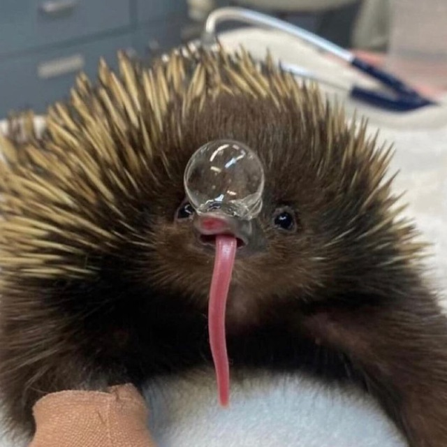

Главная
Добро пожаловать на наш сайт! Здесь вы узнаете много интересного о необычных животных, таких как ёжики.
Ёж — одно из самых загадочных существ в мире животных. Обитающий в Австралии, утконос является млекопитающим, но откладывает яйца, что делает его уникальным. Утконосы известны своим характерным клювом, похожим на утиный, и пушистым хвостом. Это животное умеет плавать и проводить большую часть времени в воде, охотясь на мелкую рыбу и ракообразных.
Контакты
Здесь можно оставить свои контактные данные или задать вопрос.
Свяжитесь с нами по любому из следующих способов:
- Телефон: +7 (000) 123-45-67
- Email: info@example.com
- Адрес: г. Москва, ул. Примерная, 123